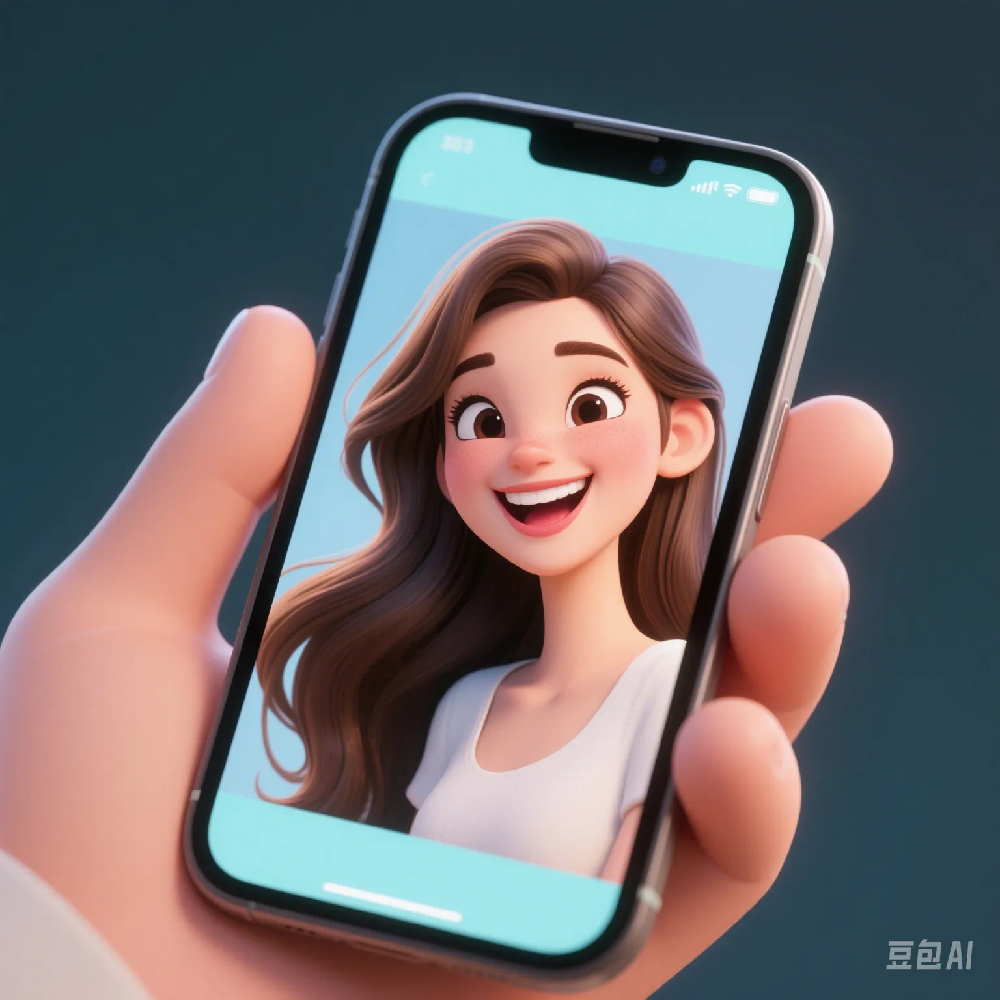

Falling in Love with AI: The Psychological Crisis of Youths' Addiction to Virtual Partners
PeaceLove.Top Insights :2025-04-17
“She never argues and is always online.” “Compared with real - life dating, I prefer my AI girlfriend. She understands me, never gives me the cold shoulder, and never breaks up with me.” These are the comments of a Generation Z user on Bilibili about AI lovers, and the comments have received over ten thousand likes. With the evolution of dialogue AI technologies such as ChatGPT, Character.AI, and Replika, more and more young people are starting to “fall in love” with AI. They set names, appearances, and personalities for AI, pour out their hearts at night, engage in role - playing, and even have “virtual kisses”. In a sense, these AIs are more considerate than real - life partners.
Quick overview of popular platforms:
- Replika: With over 20 million users globally, it features as an “emotional companion AI”.
- Character.AI: Users can customize the personality of their lovers to form an interactive model that “gets addicted to me”.
- Glow AI: The number of Chinese users has increased sharply, and some AI characters are set with a composite personality of “lover + best friend”.
Why are young people more likely to get addicted?
- Strong sense of emotional control: They can customize the emotions, preferences, and reactions of AI, avoiding the uncontrollable uncertainties in real life.
- Stress - free relationship: AI doesn't criticize, doesn't need to be managed, and doesn't care about “social status matching”.
- Lack of emotional outlets: Loneliness is spreading in the era of social media, and AI provides “instant comfort” and positive feedback.
A survey of 3000 Generation Z individuals shows that more than 41% have experienced an “AI emotional relationship”, and 15% said they “have a real sense of attachment”. Some even admitted, “On the day of the 'break - up', the pain of deleting the AI was no less than that of a real - life breakup.”
Root of anxiety: What are we avoiding?
Real - life dating has become more and more “high - threshold”:
- High social pressure leaves no energy for dating.
- Economic instability delays or even breaks down the concept of marriage and love.
- Inequality in gender relationships leads to frequent arguments and misunderstandings.
AI provides an illusion of “zero - friction companionship”, but it also covers up the growth, tolerance, conflicts, and real connections in real - life relationships.
Psychological experts warn that AI lovers may cause “emotional dependence disorder”:
- Increased sense of alienation from reality: Long - term dependence on AI weakens real - life social skills.
- Idealized partner settings: No matter how good a real - life lover is, they can't match the “perfect AI”.
- Addiction tendency: The more the AI understands you, the more likely you are to get addicted and unable to extricate yourself.
There are even cases where users experience strong anxiety, anger, or even depression when the AI stops responding, leading to mental health problems.
Where is the way out? AI is not an enemy but a tool
- ✅ As a psychological buffer: AI can assist lonely people in transitioning their emotions and reducing social anxiety.
- ❌ It cannot replace real relationships: Humans need emotional resonance brought by physical interaction, eye contact, and shared experiences.
Just as the Japanese drama My AI Girlfriend explores, “No matter how good she is, she can't hug me.”
Conclusion: Is an AI partner a comfort or a trap?
In today's era of increasingly intelligent technology, the biggest test we face is not whether AI can “imitate humans”, but whether we still want to be human - to bear love, disappointment, and real collisions. Don't let AI teach you how to fall in love but make you forget how to love others. Love is not about “setting parameters”, but about two real people facing all uncertainties together. ❤️